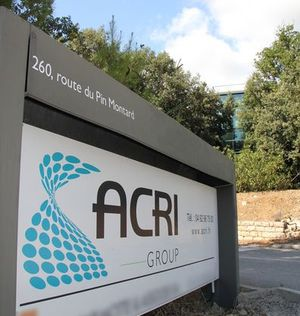
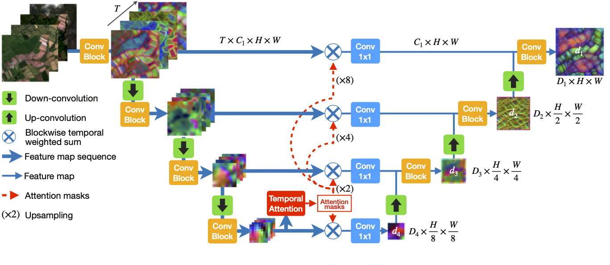

Stage de fin d'études · Master 2 INUM
Six mois chez ACRI-ST à Sophia-Antipolis, du 16 mars au 11 septembre 2026, dans le cadre du projet SCOLive2 du programme Space Climate Observatory. Objectif de la mission : localiser les oliveraies de la région PACA sur imagerie satellite, puis relier ces localisations au climat pour mesurer comment la zone favorable à l'espèce s'est déplacée depuis 1950.
Le sujet
L'olivier (Olea europaea) est une culture méditerranéenne dont l'implantation dépend étroitement du climat. En France, le verger oléicole couvre environ 55 000 hectares, et la région PACA concentre l'essentiel de la production nationale d'huile d'olive. Les projections climatiques annoncent des étés plus chauds sur ce territoire, ce qui pose une question simple : où la culture restera-t-elle possible, et où cesse-t-elle de l'être.
Y répondre demande deux briques. Il faut d'abord savoir où sont les oliviers aujourd'hui, à l'échelle d'une région entière, ce qu'aucun inventaire existant ne donne de façon complète. Il faut ensuite relier ces localisations aux variables climatiques pour estimer la zone favorable à l'espèce et la comparer entre deux périodes. C'est le découpage de ma mission chez ACRI-ST, dans le projet SCOLive2.

Mission
Les trois volets s'enchaînent. Les oliviers détectés au premier volet deviennent les points de présence du troisième, et les variables climatiques du deuxième en sont les variables explicatives.
Démarche
Volet 1 · Détection par apprentissage profond
Lecture des travaux sur la classification de séries temporelles satellite et sur la détection d'oliviers. Le choix de l'architecture U-TAE vient d'une présentation interne sur un sujet voisin, la détection de changements d'artificialisation des sols.
Images Sentinel-2 de niveau L3A, des composites mensuels sans nuages produits par Theia/CNES,
téléchargées sur la zone d'étude via l'API pygeodes du portail GEODES.
Parcelles déclarées en oliviers dans le Registre Parcellaire Graphique de l'IGN, récupérées par le service WFS de la Géoplateforme, puis complétées par des annotations manuelles sous QGIS pour les zones mal couvertes et pour les contre-exemples.
Découpage en patches de 128 × 128 pixels à 10 m de résolution, empilement des bandes spectrales et des indices de végétation NDVI et NDRE, séries de 6 ou 12 dates selon la configuration, mise au format PASTIS attendu par U-TAE, puis normalisation.
Répartition entraînement, validation et test stratifiée spatialement. Un tirage aléatoire patch par patch aurait laissé des patches voisins, presque identiques, des deux côtés de la séparation, et la performance mesurée aurait été optimiste.
U-TAE associe un encodeur U-Net spatial et un encodeur d'attention temporelle, qui pondère la contribution de chaque date. Les pixels oliviers représentent moins de 3 % du total, ce qui a conduit à une perte combinée Focal et Dice. Exploration des hyperparamètres sur la fonction de perte, le taux d'apprentissage et la stratégie d'échantillonnage.
Métrique principale : l'IoU de la classe olivier, qui pénalise à la fois les faux positifs et les faux négatifs sans être porté par la masse des pixels négatifs. Suivi en complément de la précision, du rappel, du F1 et de la matrice de confusion sur l'ensemble de test.
Application du modèle retenu à l'ensemble de la zone d'étude, puis filtrage des fausses détections sur routes et bâti à partir de masques OpenStreetMap, et vectorisation des sorties.

Volets 2 et 3 · Climat et niche écologique
Réanalyses ERA5-Land de l'ECMWF, grille de 0,1° et pas mensuel depuis 1950, téléchargées par l'API du Climate Data Store de Copernicus.
Les 19 variables BIO calculées sur deux périodes : 1950-1980 comme référence, 1995-2025 pour les conditions récentes.
Matrice de corrélation de Pearson entre variables, deux variables au-delà de |r| = 0,85 étant tenues pour redondantes, puis arbitrage sur critère écologique. Sept variables retenues : BIO1, BIO5, BIO6, BIO9, BIO12, BIO14 et BIO19.
Extraction des points de présence depuis la carte de détection, nettoyage, puis raréfaction spatiale à la résolution ERA5 de 11 km pour éviter que les zones densément détectées pèsent trop lourd. Tirage des points de fond sur la zone d'étude.
MaxEnt 3.4.4, exécuté en Java et piloté depuis Python. Features linéaires, quadratiques et d'interaction, avec une régularisation L1 qui annule une partie des coefficients et limite le sur-apprentissage malgré un nombre de présences réduit. Évaluation par AUC-ROC et TSS.
Application du modèle calibré aux deux périodes climatiques, puis comparaison des cartes de favorabilité pour situer les zones qui gagnent et celles qui perdent en faveur.
Point de suivi hebdomadaire avec l'équipe, présentations en réunion à plusieurs étapes du stage, rédaction du rapport et soutenance.
Outils
| Langage | Python, pour toute la chaîne. MaxEnt s'exécute en Java 8 et est piloté par un script Python. |
| Deep learning | PyTorch, torchvision. Implémentation U-TAE de Garnot & Landrieu adaptée à mon jeu de données. |
| Géospatial | rasterio, GeoPandas, Shapely, pyproj, Fiona, QGIS pour l'annotation |
| Climat | xarray, netCDF4, cdsapi (Climate Data Store de Copernicus) |
| Téléchargement satellite | pygeodes (portail GEODES, Theia/CNES), requests |
| Analyse | NumPy, SciPy, pandas, scikit-learn |
| Visualisation | Matplotlib, seaborn |
| Sources de données | Sentinel-2 L3A, ERA5-Land, Registre Parcellaire Graphique (IGN), OpenStreetMap |
Résultat
Les trois volets fixés au cadrage ont été menés à leur terme dans les six mois :
Les niveaux de performance obtenus sur le modèle de détection comme sur le modèle de niche sont conformes à ce qui était attendu au cadrage, et bons au regard des valeurs de référence de la littérature.
Bilan
De la donnée brute téléchargée jusqu'à la carte finale, en passant par l'annotation, l'entraînement et le post-traitement. Chaque étape contraint la suivante.
Avec moins de 3 % de pixels positifs, l'accuracy n'apprend rien. L'IoU de la classe minoritaire était la bonne mesure, et la séparation spatiale des jeux la bonne précaution.
Le deep learning vit en Python et PyTorch, MaxEnt en Java. Les faire fonctionner ensemble demande une attention constante aux formats et aux systèmes de coordonnées.
Présenter mon travail en réunion, répondre aux objections, et accepter qu'une remarque remette en cause un choix déjà fait pour en tirer une meilleure version.
Expérience
J'ai passé six mois dans une équipe de recherche appliquée exigeante sur le plan scientifique, et disponible pour accompagner un stagiaire dans ses choix comme dans ses erreurs. On m'a laissé une réelle liberté dans l'exploration des méthodes, avec un point de suivi chaque semaine qui m'a évité de partir trop loin dans une mauvaise direction.
Le plus formateur a été de présenter mon travail à plusieurs reprises, en réunion et devant mes encadrants. Ces échanges ont directement modifié mes choix, sur la sélection des variables climatiques comme sur la stratégie d'entraînement du modèle. Je ne m'attendais pas à développer cette compétence aussi concrètement en arrivant.
Je termine ce stage avec l'envie de continuer sur la détection et le traitement d'images par apprentissage profond, et une première expérience réelle du fonctionnement d'une équipe de R&D.